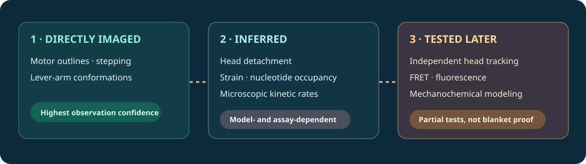
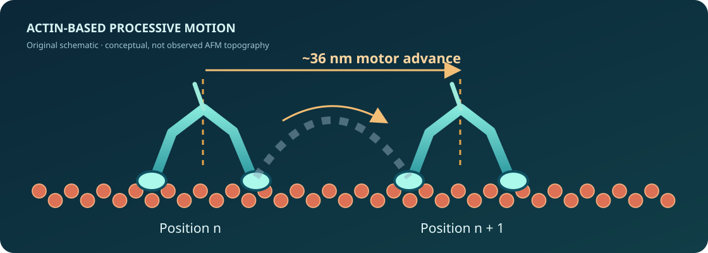

What did the paper actually prove?
Core thesis. Fast, low-loading AFM can capture the topographical evolution of a functional myosin V motor as it walks along an actin filament. This is a new observational capability, not the first evidence that myosin V walks hand over hand.

36 nm processive steps
Original source: Fig. 1a; Movie 1. Measurement: Direct topographic tracking. Audit: Very strong: already independently established.
Lever-arm rotation
Original source: Fig. 1c–e; Movie 2. Measurement: Observed orientation changes; obstructed-step assay. Audit: Strong, with obstacle-perturbation caveat.
Foot stomping
Original source: Figs. 1–3; Movies 1–5. Measurement: Disappear/reappear and displacement classification. Audit: Partially corroborated; frequency not generalized.
Intramolecular strain
Original source: Fig. 2b; Movie 4. Measurement: Tail unwinding then rotation. Audit: Inferred tension, not force measurement.
ADP gating
Original source: Fig. 3b–c. Measurement: Structural conformation-dependent fitting. Audit: Rate inference depends on kinetic-state model.
Important provenance distinction: Hand-over-hand movement and a swinging lever mechanism were supported by fluorescence and mechanical probe studies before 2010 [Yildiz, Science, 2003; Shiroguchi, Science, 2007]. Kodera’s novelty is the direct imaging of molecular outlines during function.
Need, approach, benefits, competition
Need
Study protein structure and dynamic function simultaneously, rather than static images or trajectories of labels.
Approach
Liquid tapping-mode high-speed AFM on partially biotinylated actin anchored to a supported lipid bilayer; weak sideways motor adsorption.
Benefits
Molecular-scale shape movies at 146.7 ms/frame; discernible heads, necks and filament.
Competition
Single-fluorophore localization, polarized fluorescence, gold-rod tracking, optical trapping and static electron microscopy.
Need
Correlate dynamic topography with chemistry and mechanical work without substantially perturbing the sample.
Approach
Faster AFM, interferometric scattering, correlative fluorescence, force readouts, and structural techniques chosen for the parameter of interest.
Benefits
HS-AFM remains distinctive for label-free dynamic surface morphology.
Competition
Fast head tracking and FRET reveal faster movements or chemistry; cryo-EM offers rich structures but not the same continuous molecular movies.
Benchmark fairness: A 1.5 nm fluorophore localization precision measured by 2003 optical methods is not a directly comparable spatial resolution for whole-protein AFM morphology. Each modality measures a different observable.
Fast electronics met a carefully constrained sample

N/m cantilever stiffness
Small low-stiffness cantilevers with approximately 0.8–1.2 MHz resonance in water, quality factor around 2.
Best reported tip radius
Sampling 1.625 nm/pixel does not establish equal lateral physical resolution; tip broadening matters.
Estimated peak force
Short approximately 100 ns contacts were intended to limit mechanical disturbance, not eliminate it.
Crucially, the imaging-favorable bilayer contained 5% of the positively charged lipid DPTAP, enabling weak sideways adsorption. This was necessary for clear topography but changed motor kinetics. Both high-speed instrumentation and substrate preparation were necessary; neither alone would have given these movies.
Breakthrough classification: enabling experimental capability and successful integration, plus mechanistic insight; not a first discovery of the hand-over-hand stepping principle.
The beautiful movies—and their blind spots
Processive walking and lever-arm rotation
Strong visual basis Head positions progress by about 36 nm, consistent with established fluorescence measurements. Leading-neck orientation changes are visible.
Caveat: A normal step completes within one 146.7 ms frame. Streptavidin obstacles were used to delay transitions and reveal intermediate movement. An obstacle can change both kinetics and accessible conformations.
Decisive control: compare unconstrained fast trajectories with obstacle-stalled ones using a higher-bandwidth, independent modality.
Tail unwinding and nucleotide-dependent conformations
Strain inferred Tail separation followed by lever-arm rotation suggests release of pre-existing internal strain.
Caveat: Elastic tension was not measured. Truncation, spontaneous instability, attachment chemistry and scanning perturbation remain alternative contributors. Authors argued against tip-induced splitting using early-frame observations, but did not conclusively isolate it.
Decisive control: quantitative unwinding probability versus imaging force and direct mechanical calibration.
Foot-stomping frequency and conformational-state kinetics
Observation plus model Transient head disappearance/reappearance and motion are reported; leading stomps were more common than trailing ones under selected conditions. ADP-dependent straight/bent conformation fractions support state coupling.
Caveat: The “stomp” definition combines multiple image signatures; sub-frame events are censored. Repeated events from one motor are not independent biological preparations, and conformation is a proxy rather than a direct nucleotide assay.
Decisive control: independently detect nucleotide occupancy and attachment while sampling at a rate faster than typical head movements.
The numbers that change the interpretation
| Metric | Original value / derived check | Why it matters |
|---|---|---|
| Step length | ~36 nm | Matches established hand-over-hand model; not new in 2010 |
| Frame interval | 146.7 ms = 6.82 frames/s | Rapid within-step sequences cannot be reconstructed continuously |
| Scan | 130 × 65 nm² over 80 × 40 pixels | Pitch = 1.625 nm/pixel; not equivalent to optical or physical resolution |
| No-DPTAP Vmax | 403 ± 7 nm/s (supplementary fit) | Less-adsorbed mobility benchmark |
| DPTAP trail-head ADP rate | 7.2 ± 1.5 s⁻¹ | Approximate 36 nm × rate gives Vmax ≈ 259 nm/s |
| Implied surface velocity reduction | (403 − 259)/403 ≈ 36% | Non-negligible substrate influence under different conditions |
| Lead-head ADP off-rate | 0.100 ± 0.004 s⁻¹ | Derived from conformation kinetics, not direct fluorescent ADP tracking |
| Lead/trail off-rate ratio | 7.2 / 0.100 = 72 | Supports strong gating, subject to model dependence |
| Dissociation constant check | 0.100 / 1.3 ≈ 0.077 µM | Matches reported Kd ≈ 0.075 ± 0.013 µM; arithmetic consistency only |
| Stomps per step | ~2 at 0.1 µM ATP; ~0.4 at 1 µM ATP | Per-step counts must be compared with dwell time |
Back-of-envelope consequence of the reported kinetic fit. Not a separately measured Vmax.
Dominant metrology issue: A 10 ms transient is ~15 times shorter than one frame, and a 1 ms event ~147 times shorter. Image-to-image changes cannot identify all intermediate microsteps or unique chemical triggers.
Independent evidence, separated from adoption
Single-molecule fluorescence established hand-over-hand stepping before Kodera; a key provenance control.
Attached-rod microscopy supported lever action plus a Brownian component before HS-AFM movies.
Direct molecular-shape movies; observed lever-arm orientation, foot-stomping-like events, and tail unwinding.
Polarization-based dynamics provided independent evidence for short-lived structural fluctuations, not a numerical replication of AFM stomp rates.
Interferometric scattering tracked individual head motion at much shorter time intervals and discussed rare head rebinding; qualitative independent support.
Time-resolved FRET connected mechanical lever-arm motion to catalytic-cycle dynamics; constrains mechanochemical interpretations.
Biochemical/force studies and mechanically constrained models further refined the energy landscape and stepping pathways.
Claim survival matrix
| Proposition | 2026 status | Specific limitation |
|---|---|---|
| Hand-over-hand motion | Independently corroborated | Established before 2010 |
| Leading lever-arm swing | Independently corroborated | Sub-frame structural details depend on method |
| Detached-head Brownian exploration | Independently corroborated | Detailed paths and timescales vary |
| Transient head detachment/rebinding | Partially corroborated | Qualitative observations; exact AFM frequencies not secured |
| 3:1 leading/trailing stomp ratio | Not decisively independently established | Condition- and censoring-dependent |
| Tail unwinding proves tension | Indirect support | No direct tension measurement in anchor paper |
| Lead-head ADP kinetic constant | Partially supported | Model-based numerical estimate |
| ATP-independent power-stroke energy interpretation | Unresolved | Conformational relaxation ≠ complete energetic cycle |
Follow-up studies use different reporters, motor constructs, ionic conditions and time resolution. “Independent support” for a phenomenon is not a direct replication of the exact AFM protocol.
It transformed visibility more than basic motor theory
Scientific legacy: compelling real-space evidence of myosin geometry during function; prompted mechanistic discussion of transient head detachments and strain-dependent gating.
Technology legacy: a landmark proof that liquid HS-AFM could film delicate active proteins. Subsequent dynamic investigations of enzymes, assemblies and membrane proteins have broadened the technology's relevance [Ando & Fukuda, Annu. Rev. Biophys., 2024].
Limitation of its reach: HS-AFM does not displace optical trapping for calibrated force, fluorescent readouts for nucleotide chemistry, or cryo-EM for broad 3D atomic structural detail. These are complementary observables.
Citation assessment: the paper is widely cited, mostly as a representative HS-AFM milestone. Citation counts do not constitute independent replication of foot-stomping rates. No verified exhaustive citation-count trajectory is presented.
Evidence-anchored scorecard
1 = very weak, 3 = credible/moderate, 5 = exceptional. These are editorial assessments, not outputs of a validated metrology standard.
Ten questions worth asking the authors
Tip-induced events?
How do stomping rates vary with tapping amplitude, force, direction and duty cycle?
Evidence needed: Same motor, orthogonal attachment readout and full sensitivity curve.
Surface dependence?
Does DPTAP change pathway branching, not just velocity?
Evidence needed: Matched head-specific measurements with and without charged lipid.
Disappear or detach?
Can loss of AFM contrast reflect an out-of-plane head rotation rather than actin dissociation?
Evidence needed: Simultaneous optical attachment reporter.
Event censoring?
How many sub-147 ms head motions are missed or merged?
Evidence needed: Bandwidth sweep with kinetic missed-event correction.
3:1 asymmetry?
Does lead/trail stomping asymmetry persist after time-normalization and under force?
Evidence needed: Hazard rates per head, load and nucleotide condition.
Tail unwinding force?
What elastic free energy is actually released when the dimer separates?
Evidence needed: Calibrated force-versus-conformation experiment.
ADP occupancy?
Can a straight leading head be confidently assigned ADP-bound in every case?
Evidence needed: Correlated labeled nucleotide and mechanical shape measurement.
Obstruction bias?
Do streptavidin obstacles select an unnatural intermediate?
Evidence needed: Comparison with unimpeded fast tracking.
Construct generality?
Would full-length cargo-bearing myosin Va display the same statistics?
Evidence needed: Controlled full-length comparison.
Energy bookkeeping?
Which transitions consume chemical free energy and which relax stored strain?
Evidence needed: Joint chemical, force and structural trajectories.
What survives the skeptical reading?
A real measurement advance: the authors obtained high-quality processive motor movies, reproducible-looking steps, physically interpretable shapes and ATP-dependent kinetics. Independent optical techniques support the core motor behavior and some rebinding events.
The scanning probe and imaging substrate potentially influence the very dynamics being measured. Mechanical strain, ADP occupancy and some transient lifetimes are inferred rather than directly observed, leaving multiple mechanisms compatible with the images.
Decisive next experiment: simultaneous fast topography and independent head-attachment/nucleotide-state reporting under matched surfaces and applied loads. Such a test could separate real detachment from apparent disappearance and resolve chemical/mechanical temporal order.
Final verdict: Landmark enabling measurement; strong structural claims; meaningful but less conclusive mechanistic refinements. Surface-induced bias and missed fast events are central concerns, not reasons to dismiss the visual achievement.
Traceable sources
Kodera et al., Nature (2010) · Anchor; Figs 1–3, Methods · doi:10.1038/nature09450
Yildiz et al., Science (2003) · Prior hand-over-hand evidence · doi:10.1126/science.1084398
Shiroguchi & Kinosita, Science (2007) · Lever action and Brownian motion · doi:10.1126/science.1140468
Beausang et al., Biophys. J. (2013) · Independent polarized fluorescence dynamics · doi:10.1016/j.bpj.2013.01.057
Hinczewski et al., PNAS (2013) · Stochastic motility model · doi:10.1073/pnas.1312393110
Andrecka et al., eLife (2015) · Independent interferometric head tracking · doi:10.7554/eLife.05413
Trivedi et al., PNAS (2015) · Lever-arm and catalytic-cycle coordination · doi:10.1073/pnas.1517566112
Gunther et al., J. Biol. Chem. (2020) · FRET and optical-trap mechanochemistry · doi:10.1074/jbc.RA120.015632
Hathcock et al., eLife (2020) · Constrained-diffusion motor model · doi:10.7554/eLife.51569
Ando & Fukuda, Annu. Rev. Biophys. (2024) · HS-AFM retrospective · doi:10.1146/annurev-biophys-030722-113353
Prepared 2 November 2026 · Independent scientific commentary · Repository